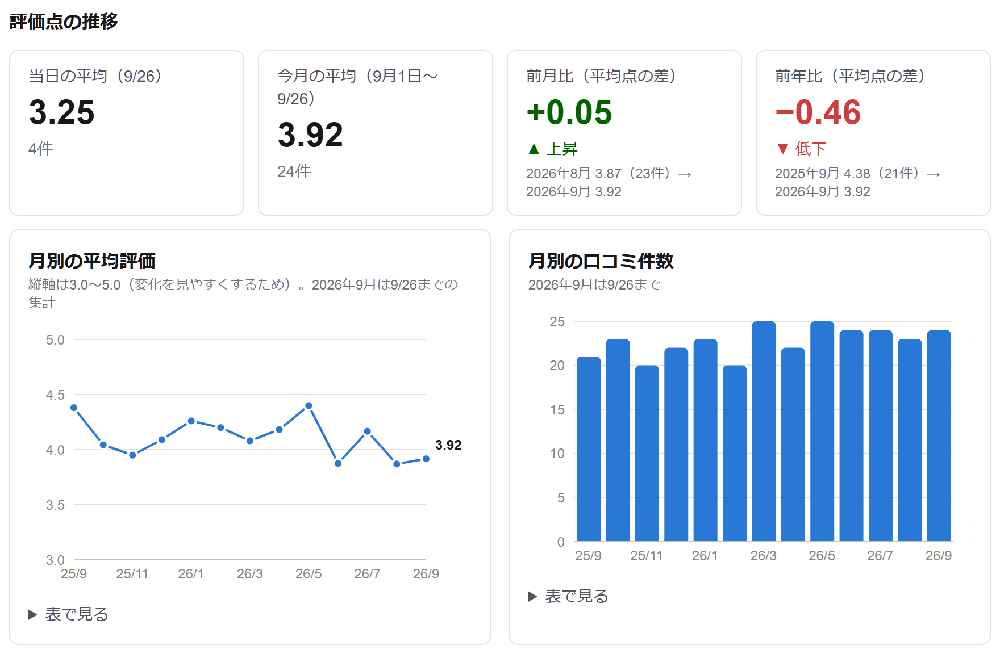

事業検証・設計レポート 口コミAI分析＆返信支援アプリ
作成者：shiomiawa
公開URL：https://hotel-review-ai.vercel.app
GitHub：https://github.com/shiomiawa/hotel-review-ai
何を作るか
ネットの口コミと、フロントや電話で受けた現場のお客様の声をひとつにまとめ、
同じ4つの視点で分析して「優先して直すべき点」と「強み」を示す、ホテル・旅館の改善の仕組み。
返信文の下書きは補助機能。
使う前と後で変わること
| 今 | アプリを使うと |
|---|
| サイトごとに管理画面を見て回る。評価の付け方がサイトごとに違い、横に並べて比べられない | CSVを1回読み込むだけで、全サイトの評価点の推移（前月比・前年比）が1画面で分かる |
| ネットの口コミと、フロント・電話・アンケートで受けた声が別々に扱われ、同じ不満が両方に出ていても気づきにくい | 現場の声をその日のうちに記録し、ネットの口コミと同じ4軸で分類。経路ごとに不満の傾向を比べられる |
| 「最近Wi-Fiの不満が多い」などの傾向は、口コミを読んだ人の記憶頼み | 口コミを4つの軸に分類し、悪くなっている軸を「優先改善アラート」で知らせる |
| 返信文をどう書くかに時間を取られ、改善まで手が回らない | 返信の下書きを補助し、空いた時間を改善と接客に回す |

公開中のアプリで架空のサンプルを読み込んだ画面（評価点の推移）。4軸分析は開発中。
1. なぜ必要か（課題と、事業検証で確認した根拠）
| 課題 | 根拠 |
|---|
| 口コミは予約を左右し、無視できない | 旅行者の81%が予約前に口コミを「常に／頻繁に」読む。楽天トラベル・じゃらんでは口コミの件数と評価点が掲載順位に影響する。（Tripadvisor調査を報じる記事・業界解説。二次情報） |
| 口コミが散らばり、比べられない | サイトごとに評価の仕組みが違う（例：じゃらんは直近1年・5件以上、一休.comは過去3年・10件以上、Booking.comは10段階）。「朝食の不満」をサイトをまたいで追うには、人が読み替える必要がある。（宿力「主要OTA・Googleのクチコミ評価の仕組み」調査）
実際の口コミ管理サービスの出力CSVでも、7つのサイトの口コミが混在していた。 |
| 具体的な不満が見落とされる | 騒音・Wi-Fi・室温・朝食の品切れは、よくある苦情とされる。（業界記事。確度は低め）国内ビジネスホテル10ブランド・口コミ約10万件の分析では「清掃」が共通の弱点で、スタッフ対応の肯定率はブランドにより91%〜40%と大きな差があった。（mov社調査） |
| 現場の声が分析に生かされない | フロントや電話、アンケート、旅行会社から受けた声は、ネットの口コミとは別に記録され、まとめて分析されにくい。（この課題は前単元の事業検証では調べておらず、仮説。第4章の未検証項目） |
| 返信に手が回っていない（補助機能の根拠） | 口コミへの返信率は、大手エコノミーチェーンで平均54%、都内ラグジュアリーホテルで27.8%。（TrustYou Japan調査。母数は小さい）返信している施設は予約につながる割合が21%高いという調査もある（ただし相関で、因果は未確認）。 |
2. 利用者と毎日の運用
| 利用者 | ホテル・旅館の支配人、フロントスタッフ。宿泊の大半は1泊（観光・出張・家族旅行など） |
|---|
| 流れ | ①現場で受けた声は、その日のうちにスタッフがアプリに記録し、対応状況を更新する ②毎日夕方、口コミ管理サービスやOTAの管理画面から口コミCSVを取り出して読み込む ③ボタン1つで口コミと現場の声をまとめて分析 ④現場スタッフへ日次メールで共有 |
|---|
| 設計思想 | データを取りに行くのはオーナー。アプリは渡されたCSVを分析するだけで、サイトの自動収集（スクレイピング）はしない。 |
|---|
3. 事業検証の要点：競合と、このアプリの立ち位置
| 競合 | 主な機能 | 料金 |
|---|
| かんざし（くちこみクラウド） | Googleを含む12サイトの未返信口コミを一括表示、AIによる返信文作成、評点の統計 | 月14,800円＋AI作文 月3,000円（税抜） |
| 口コミコム | Googleマップなど32サイトと連携、AI分析、多言語翻訳、AI返信サポート（Googleマップ向け） | 非公開 |
| TrustYou | 口コミの一元管理、700超のカテゴリでの感情分析、AI返信（ResponseAI） | 見積制（中〜大規模向け） |
| Google（ビジネスプロフィール） | Geminiによる口コミ返信の下書き生成 | 日本での提供条件は未確認 |
| ChatGPT など | 口コミを貼り付けて返信文を作らせる。宿泊業向けのプロンプトも出回っている | 無料〜月数千円 |
検証から分かったこと：「AIで返信文を作る」機能は、すでにありふれていて差別化にならない。
大手ツールも Google 自身も提供しており、汎用のChatGPTでも代わりがきく。一方、分析は「客室」「サービス」のような粗い区分にとどまる例がある。
→ そこでこのアプリは、返信ではなく「ネットの口コミと現場の声をまとめた、施設に合った具体的な軸での分析と、優先して直すべき点の提示」を主役にした。
返信文の下書きは、分析と改善に時間を回すための補助機能として位置づける。
このアプリならではの点
- 既存ツールの「上に乗る」：口コミコムの出力CSVをそのまま読み込める。すでに口コミ管理サービスを使っている施設も、データを活かして分析できる。
- 施設に合った4つの軸：客室設備／通信環境／接客・ホスピタリティ／朝食・ラウンジ。「Wi-Fiを直す」「朝食会場の混雑を減らす」のような具体的な改善につなげやすい。
- 現場の声も同じ軸で：フロント・電話やメール・アンケート・旅行会社や団体から受けた声を記録し、ネットの口コミと同じ4軸で分類して経路別に比べる。（TrustYouはアンケート機能を持つ。フロントや電話の声まで同じ軸で扱うツールがあるかは、今回の事業検証では調べていない）
- 評価点の推移は計算で出す：前月比・前年比をAIを使わずに正確に出し、AIの費用は分類と返信の下書きだけにかける。
4. 検証できたこと・まだ検証していないこと
| 仮説 | 判定 | 補足 |
|---|
| 口コミが売上に影響し、運営者が無視できない | 支持 | 複数の調査で一致 |
| 口コミが複数サイトに散らばり、比べるのが難しい | 支持 | サイトごとの仕組みの違いを確認できた |
| 騒音・Wi-Fi・室温・朝食などの不満がよく出る | 一部支持 | 信頼できる大規模調査の数字は少ない |
| 返信に手が回っていない施設が多い | 一部支持 | 返信率は54%／27.8%。ただし母数が小さい |
| 施設がお金を払ってでも使いたい | 未検証 | 支払意思額のデータがない。いちばん大事な検証項目 |
| 現場の声とネットの口コミをまとめて見たい | 未検証 | 事業検証では調べていない。現場の声の記録方法を聞き取りで確認する |
| 一言だけの好評口コミへの返信に悩んでいる | 未検証 | 直接の証拠はない |
事業検証はWeb上の公開情報のみによる。二次情報（報道・解説記事経由）やツール提供会社自身の主張を含み、顧客への聞き取りや競合ツールの実機での比較はしていない。
5. 市場規模と今後の検証
- 市場規模：国内のホテル・旅館などすべてが口コミ管理ツールを使った場合の年間市場（TAM）は約122億円（施設数×既存ツールの料金水準という仮定に基づく試算）。対象を「1泊中心の施設」に見直したため、狙う範囲（SAM）は試算し直しが必要。
- 今後の検証：支配人10〜15名への聞き取り（支払意思額、口コミの確認・返信にかけている時間、現場の声を今どう記録・共有しているか）、競合ツールとの実機比較、日本での Google の返信下書き機能の提供状況の確認。
6. 機能と進捗（MVP）
| # | 機能 | 内容 | 状態 |
|---|
| 1 | 口コミCSVの読み込み | 標準形式と口コミコムの出力CSVを列名から自動で判別。UTF-8／Shift_JIS対応。おかしな行は「○行目：理由」を日本語で表示。口コミ一覧（絞り込み、返信済み／未返信、外国語の日本語訳）も完成。 | 完了 |
| 2 | 現場の声の記録 | 受付日・経路・お客様の区分・内容・評価（任意）・対応状況・対応内容を記録し、一覧で対応状況を更新。氏名・電話番号・部屋番号の欄は作らず、内容に書かれていれば注意を出す。 | 完了 |
| 3 | 4軸分類・優先改善アラート・強み・経路別の比較 | 口コミと現場の声を同じ4軸にAIで分類し、否定が多い・増えている軸をアラート、肯定が多い軸を強みとして表示。経路ごとに不満の傾向を比べる。アプリの主役。 | 未着手 |
| 4 | 評価点の集計 | 当日・今月の平均、前月比、前年比。月別平均・月別件数・今月の日別平均のグラフ、サイト別平均の表。 | 完了 |
| 5 | 日次メール | 当日の口コミと当日に受けた現場の声、今月の軸別の要約、評価点の推移を現場スタッフへ送信。 | 未着手 |
| 6 | 分析結果のCSV書き出し | 分類結果を付けて書き出す（Excelで文字化けしない形式）。 | 未着手 |
| 7 | 返信下書き（補助） | 口調（格式高い／親しみやすい）と目的（お詫び＋再発防止／リピート誘致）を選択。季節感・館内サービスは施設設定から引用し、事実と違うことを書かない。 | 未着手 |
今回作らないもの：夜勤引継ぎ、料金比較、ログイン・データベース・複数施設管理、OTA／GoogleとのAPI連携。
7. システム構成
| 技術（用途） | 選んだ理由 |
|---|
| Next.js 16・TypeScript（画面とサーバー処理） | 画面とAPIを1つのプロジェクトで作れ、Vercelにそのまま公開できる。型でデータの形の食い違いを防ぐ。 |
| Papa Parse／Recharts（CSV・グラフ） | 本文中のカンマ・改行を正しく扱える定番ライブラリ／Reactの部品としてグラフを書ける。 |
| Claude API／Resend（予定） | 日本語の文脈を理解した分類と下書きのため／無料枠のあるメール送信サービス。 |
8. データ設計
| 読み込めるCSV | ①標準形式（date, site, rating, text, stay_type） ②口コミコムの出力（投稿日時・口コミサイト・★の数・タイトル・コメント・言語・翻訳コメント・返信内容 など）。列名から自動で判別する。 |
|---|
| 読み込みのルール | CSVの最新日を「当日」とする。評価は1.0〜5.0の小数も受け付ける。外国語は日本語訳を分析に使い原文も残す。本文のない「評価のみ」の投稿は評価点の集計にだけ使う。上限は5MB・5,000行。 |
|---|
| 現場の声 | 受付日・経路（アンケート／フロント／電話・メール／旅行会社・団体）・お客様の区分・内容・評価（任意）・対応状況（未対応／対応中／完了）・対応内容。ブラウザ内に自動保存し、CSVで書き出し・読み込み（同じ声は二重に取り込まない）。評価点のグラフには混ぜない。 |
|---|
| データの扱い | サンプルはすべて架空（口コミ296件・現場の声123件、13か月分）。実在の口コミはリポジトリに入れない。お客様の氏名・電話番号・部屋番号の欄は作らない。データベースは使わない。 |
|---|